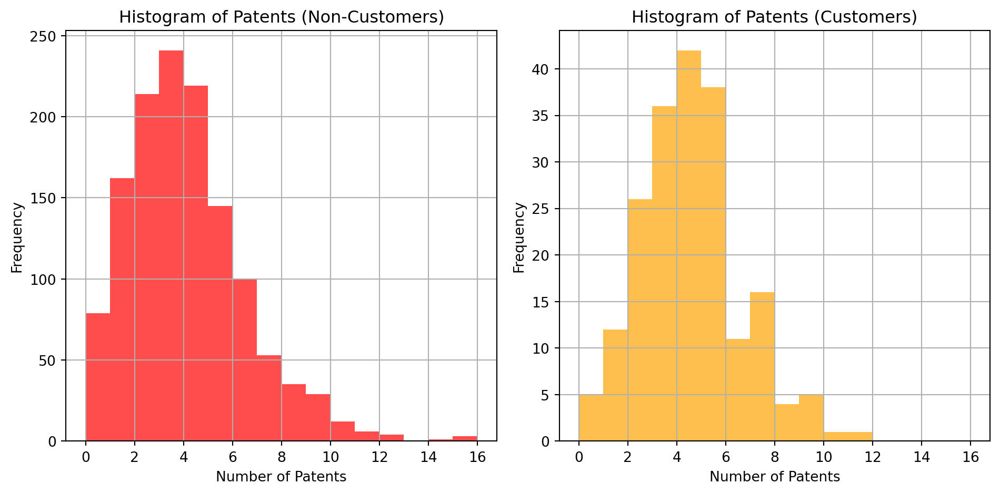
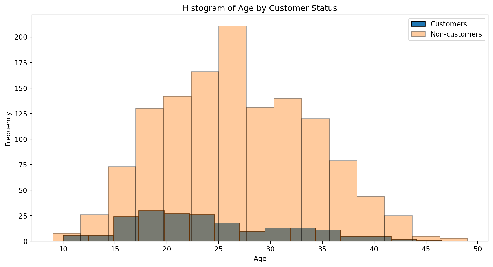
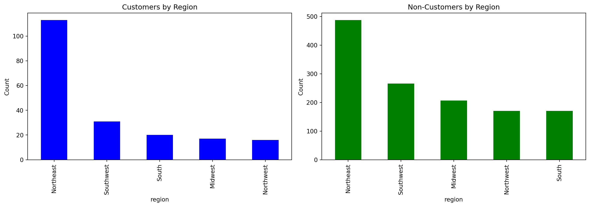
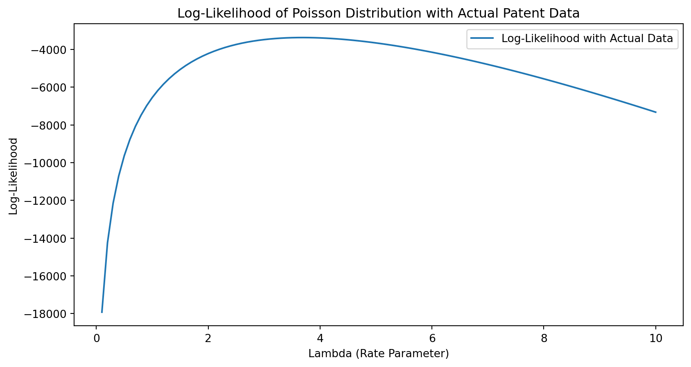
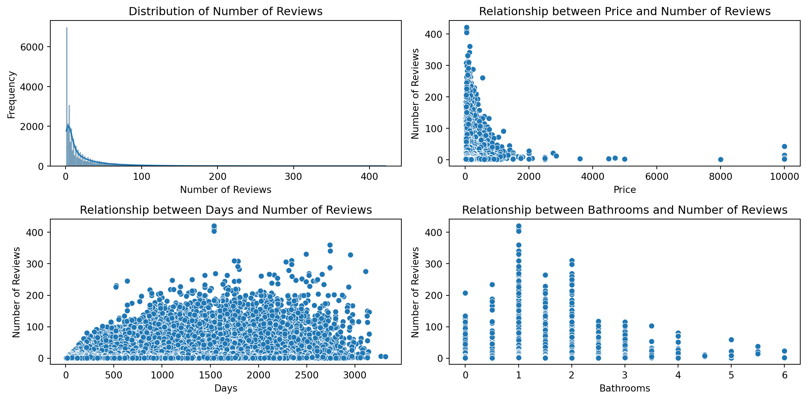

The shape of the dataframe is: (1500, 4)| patents | region | age | iscustomer | |
|---|---|---|---|---|
| 1 | 0 | Midwest | 32.5 | 0 |
| 786 | 3 | Southwest | 37.5 | 0 |
| 348 | 4 | Northwest | 27.0 | 1 |
| 927 | 3 | Northeast | 24.5 | 0 |
| 830 | 3 | Southwest | 37.0 | 0 |
Joshua Chen
December 24, 2025
Blueprinty is a small firm that makes software for developing blueprints specifically for submitting patent applications to the US patent office. Their marketing team would like to make the claim that patent applicants using Blueprinty’s software are more successful in getting their patent applications approved. Ideal data to study such an effect might include the success rate of patent applications before using Blueprinty’s software and after using it. unfortunately, such data is not available.
However, Blueprinty has collected data on 1,500 mature (non-startup) engineering firms. The data include each firm’s number of patents awarded over the last 5 years, regional location, age since incorporation, and whether or not the firm uses Blueprinty’s software. The marketing team would like to use this data to make the claim that firms using Blueprinty’s software are more successful in getting their patent applications approved.
This is the first 5 rows of the data
The shape of the dataframe is: (1500, 4)| patents | region | age | iscustomer | |
|---|---|---|---|---|
| 1 | 0 | Midwest | 32.5 | 0 |
| 786 | 3 | Southwest | 37.5 | 0 |
| 348 | 4 | Northwest | 27.0 | 1 |
| 927 | 3 | Northeast | 24.5 | 0 |
| 830 | 3 | Southwest | 37.0 | 0 |
There are 1500 rows and 4 columns
| patents | age | iscustomer | |
|---|---|---|---|
| count | 1500.000000 | 1500.000000 | 1500.000000 |
| mean | 3.684667 | 26.357667 | 0.131333 |
| std | 2.352500 | 7.242528 | 0.337877 |
| min | 0.000000 | 9.000000 | 0.000000 |
| 25% | 2.000000 | 21.000000 | 0.000000 |
| 50% | 3.000000 | 26.000000 | 0.000000 |
| 75% | 5.000000 | 31.625000 | 0.000000 |
| max | 16.000000 | 49.000000 | 1.000000 |
patents: Number of patents awarded over the last 5 years.
region: Regional location of the firm.
age: Age of the firm since incorporation.
iscustomer: Indicates whether the firm uses Blueprinty’s software (1 = customer, 0 = not a customer)

mean_customers = df[df['iscustomer'] == 1]['patents'].mean()
mean_non_customers = df[df['iscustomer'] == 0]['patents'].mean()
(mean_customers, mean_non_customers)(4.091370558375634, 3.6231772831926325)The mean number of patents for customers appears to be slightly higher at 4.09, while the mean number of patents for non-customers appear to be lower at 3.62.
However, Blueprinty customers are not selected at random. It may be important to account for systematic differences in the age and regional location of customers vs non-customers.
To investigate any systematic differences, below are plots that compare regions and ages by customer status

mean_age_customers = data_customers['age'].mean()
mean_age_non_customers = data_non_customers['age'].mean()
(mean_age_customers, mean_age_non_customers)(24.1497461928934, 26.691481197237145)It appears that the average age of customers are lower than the average age of non customers.

The distribution of customers and non-customers across regions is not uniform. Both histograms reveal differences in the concentration of customers versus non-customers in various regions, suggesting regional preferences or market penetration differences.
Since our outcome variable of interest can only be small integer values per a set unit of time, we can use a Poisson density to model the number of patents awarded to each engineering firm over the last 5 years. We start by estimating a simple Poisson model via Maximum Likelihood.
The likelihood function for a set of independent and identically distributed observations ( Y_1, Y_2, , Y_n ) from a Poisson distribution, where each ( Y_i ) represents the number of patents awarded to an engineering firm in a given period and follows a Poisson distribution with parameter ( ), is given by:
\[ L(\lambda | Y_1, Y_2, \ldots, Y_n) = \prod_{i=1}^n f(Y_i | \lambda) \]
Given the probability mass function of the Poisson distribution ( f(Y|) = e{-}Y/Y! ), the likelihood function can be written as:
\[ L(\lambda | Y_1, Y_2, \ldots, Y_n) = \prod_{i=1}^n \left( \frac{e^{-\lambda} \lambda^{Y_i}}{Y_i!} \right) \]
This can be simplified to:
\[ L(\lambda | Y_1, Y_2, \ldots, Y_n) = e^{-n\lambda} \lambda^{\sum_{i=1}^n Y_i} \prod_{i=1}^n \frac{1}{Y_i!} \]
Here, ( n ) is the total number of observations (engineering firms), ( {i=1}^n Y_i ) is the total number of patents awarded across all firms, and ( {i=1}^n ) is the product of the factorials of the counts of patents for each firm.
The log-likelihood function for the Poisson model, coded in a function of lambda and Y would look like the following:
Below I use the function above to plot lambda on the horizontal axis and the likelihood on the vertical axis for a range of lambdas, which I used the number of patents as the input.

Now, I used scipy.optimize to find the MLE after optimizing the likelihood function
from scipy.optimize import minimize
# Define the negative log-likelihood function since we minimize in the optimization
def negative_loglikelihood(lambda_, Y):
if lambda_[0] <= 0:
return np.inf # Return infinity if lambda is non-positive
lambda_val = lambda_[0]
return -np.sum(-lambda_val + Y * np.log(lambda_val) - np.log(factorial(Y)))
# Initial guess for lambda
initial_lambda = [1.0]
# Using scipy's minimize function to find the MLE of lambda
result = minimize(negative_loglikelihood, initial_lambda, args=(patents_data,), method='L-BFGS-B', bounds=[(0, None)])
print(f"MLE for lambda: {result['x'][0]}")MLE for lambda: 3.6846667021660804The optimization has successfully found the maximum likelihood estimate (MLE) of 𝜆 for the Poisson distribution based on the patent data. The MLE of 𝜆 is approximately 3.685. This indicates that the best estimate for the average number of patents awarded per engineering firm over the observed period, under the assumption of a Poisson distribution, is about 3.685 patents.
Next, we extend our simple Poisson model to a Poisson Regression Model such that \(Y_i = \text{Poisson}(\lambda_i)\) where \(\lambda_i = \exp(X_i'\beta)\). The interpretation is that the success rate of patent awards is not constant across all firms (\(\lambda\)) but rather is a function of firm characteristics \(X_i\). Specifically, we will use the covariates age, age squared, region, and whether the firm is a customer of Blueprinty.
First, I need to update my previous log-likelihood function to reflect that:
I then used the updated function to find the MLE vector and the Hessian of the Poisson model with covariates. I also printed out the coefficient and the standard effor for each variable.
from sklearn.preprocessing import OneHotEncoder
from scipy.linalg import inv
df['age_squared'] = df['age'] ** 2
encoder = OneHotEncoder(drop='first')
region_encoded = encoder.fit_transform(df[['region']]).toarray()
Y = df['patents'].values
from sklearn.preprocessing import StandardScaler
# Scale the continuous variables
scaler = StandardScaler()
scaled_features = scaler.fit_transform(df[['age', 'age_squared']])
# Construct the design matrix with scaled features
X = np.hstack([np.ones((df.shape[0], 1)), scaled_features, df[['iscustomer']].values, region_encoded])
initial_beta = np.zeros(X.shape[1])
# Run the optimizer with detailed logging
result = minimize(
fun=poisson_regression_loglikelihood,
x0=initial_beta,
args=(Y, X),
method='L-BFGS-B',
bounds=[(None, None)] * X.shape[1],
options={'disp': True}
)
hess_inv = result.hess_inv.todense() # if using L-BFGS, convert to dense matrix
def neg_log_likelihood(beta, Y, X):
lambda_ = np.exp(np.dot(X, beta))
return np.sum(-Y * np.log(lambda_) + lambda_ + gammaln(Y + 1))
def grad_neg_log_likelihood(beta, Y, X):
lambda_ = np.exp(np.dot(X, beta))
grad = np.dot(X.T, lambda_ - Y)
return grad
def hessian_neg_log_likelihood(beta, Y, X):
lambda_ = np.exp(np.dot(X, beta))
diag_lambda = np.diag(lambda_)
hessian = np.dot(X.T, np.dot(diag_lambda, X))
return hessian
hessian_matrix = hessian_neg_log_likelihood(result.x, Y, X)
covariance_matrix_from_hessian = inv(hessian_matrix)
standard_errors_from_hessian = np.sqrt(np.diag(covariance_matrix_from_hessian))
variables = ['Age', 'Age Squared', 'Customer Status', 'Region Northeast', 'Region Northwest', 'Region South', 'Region Southwest']
# Print the coefficients and their standard errors
for v, coef, std_err in zip(variables, result.x, standard_errors_from_hessian):
print(f"{v}| Coefficient: {coef:.4f}, Standard Error: {std_err:.4f}")Age| Coefficient: 1.2155, Standard Error: 0.0364
Age Squared| Coefficient: 1.0464, Standard Error: 0.1005
Customer Status| Coefficient: -1.1408, Standard Error: 0.1025
Region Northeast| Coefficient: 0.1182, Standard Error: 0.0389
Region Northwest| Coefficient: 0.0986, Standard Error: 0.0420
Region South| Coefficient: -0.0201, Standard Error: 0.0538
Region Southwest| Coefficient: 0.0572, Standard Error: 0.0527Now we try to replicate the coefficients and standard errors with statsmodels.GLM()
import statsmodels.api as sm
poisson_model = sm.GLM(Y, X, family=sm.families.Poisson())
# Fit the model
result = poisson_model.fit()
# Display the summary
# Extract standard errors
coefficients = result.params
standard_errors = result.bse
p_values = result.pvalues
conf_int = pd.DataFrame(result.conf_int(), columns=['95% CI Lower', '95% CI Upper'])
stats_table = pd.DataFrame({
'Coefficient': coefficients,
'Standard Error': standard_errors,
'P-value': p_values,
'95% CI Lower': conf_int['95% CI Lower'],
'95% CI Upper': conf_int['95% CI Upper']
})
print(stats_table) Coefficient Standard Error P-value 95% CI Lower 95% CI Upper
0 1.215438 0.036426 4.023701e-244 1.144045 1.286831
1 1.046460 0.100487 2.144106e-25 0.849508 1.243412
2 -1.140845 0.102495 8.884562e-29 -1.341731 -0.939960
3 0.118114 0.038920 2.407229e-03 0.041832 0.194397
4 0.098596 0.042007 1.891865e-02 0.016264 0.180928
5 -0.020094 0.053783 7.086909e-01 -0.125508 0.085319
6 0.057172 0.052676 2.777636e-01 -0.046071 0.160414
7 0.051347 0.047212 2.767834e-01 -0.041188 0.143882As seen in the table, coefficients and standard errors perfectly match the ones above.
The coefficient for the variable (index 3) representing whether or not it is a customer of Blueprinty is positive (0.1181) and statistically significant, suggests that firms using Blueprinty’s software likely have a higher expected patent count. The coefficient further implies that using Blueprinty’s software increases the patent count likelihood by approximately exp(0.1181) ≈ 1.125, or 12.5%.
AirBnB is a popular platform for booking short-term rentals. In March 2017, students Annika Awad, Evan Lebo, and Anna Linden scraped of 40,000 Airbnb listings from New York City. The data include the following variables:
- `id` = unique ID number for each unit
- `last_scraped` = date when information scraped
- `host_since` = date when host first listed the unit on Airbnb
- `days` = `last_scraped` - `host_since` = number of days the unit has been listed
- `room_type` = Entire home/apt., Private room, or Shared room
- `bathrooms` = number of bathrooms
- `bedrooms` = number of bedrooms
- `price` = price per night (dollars)
- `number_of_reviews` = number of reviews for the unit on Airbnb
- `review_scores_cleanliness` = a cleanliness score from reviews (1-10)
- `review_scores_location` = a "quality of location" score from reviews (1-10)
- `review_scores_value` = a "quality of value" score from reviews (1-10)
- `instant_bookable` = "t" if instantly bookable, "f" if nottodo: Assume the number of reviews is a good proxy for the number of bookings. Perform some exploratory data analysis to get a feel for the data, handle or drop observations with missing values on relevant variables, build one or more models (e.g., a poisson regression model for the number of bookings as proxied by the number of reviews), and interpret model coefficients to describe variation in the number of reviews as a function of the variables provided.
(40628, 13)| id | days | last_scraped | host_since | room_type | bathrooms | bedrooms | price | number_of_reviews | review_scores_cleanliness | review_scores_location | review_scores_value | instant_bookable | |
|---|---|---|---|---|---|---|---|---|---|---|---|---|---|
| 1 | 2515 | 3130 | 4/2/2017 | 9/6/2008 | Private room | 1.0 | 1.0 | 59 | 150 | 9.0 | 9.0 | 9.0 | f |
| 2 | 2595 | 3127 | 4/2/2017 | 9/9/2008 | Entire home/apt | 1.0 | 0.0 | 230 | 20 | 9.0 | 10.0 | 9.0 | f |
| 3 | 3647 | 3050 | 4/2/2017 | 11/25/2008 | Private room | 1.0 | 1.0 | 150 | 0 | NaN | NaN | NaN | f |
| 4 | 3831 | 3038 | 4/2/2017 | 12/7/2008 | Entire home/apt | 1.0 | 1.0 | 89 | 116 | 9.0 | 9.0 | 9.0 | f |
| 5 | 4611 | 3012 | 4/2/2017 | 1/2/2009 | Private room | NaN | 1.0 | 39 | 93 | 9.0 | 8.0 | 9.0 | t |
The dataframe has 40628 rows and 13 columns, I’ve also shown the first 5 rows of the dataframe
| id | days | bathrooms | bedrooms | price | number_of_reviews | review_scores_cleanliness | review_scores_location | review_scores_value | |
|---|---|---|---|---|---|---|---|---|---|
| count | 4.062800e+04 | 40628.000000 | 40468.000000 | 40552.000000 | 40628.000000 | 40628.000000 | 30433.000000 | 30374.000000 | 30372.000000 |
| mean | 9.698889e+06 | 1102.368219 | 1.124592 | 1.147046 | 144.760732 | 15.904426 | 9.198370 | 9.413544 | 9.331522 |
| std | 5.460166e+06 | 1383.269358 | 0.385884 | 0.691746 | 210.657597 | 29.246009 | 1.119935 | 0.844949 | 0.902966 |
| min | 2.515000e+03 | 1.000000 | 0.000000 | 0.000000 | 10.000000 | 0.000000 | 2.000000 | 2.000000 | 2.000000 |
| 25% | 4.889868e+06 | 542.000000 | 1.000000 | 1.000000 | 70.000000 | 1.000000 | 9.000000 | 9.000000 | 9.000000 |
| 50% | 9.862878e+06 | 996.000000 | 1.000000 | 1.000000 | 100.000000 | 4.000000 | 10.000000 | 10.000000 | 10.000000 |
| 75% | 1.466789e+07 | 1535.000000 | 1.000000 | 1.000000 | 170.000000 | 17.000000 | 10.000000 | 10.000000 | 10.000000 |
| max | 1.800967e+07 | 42828.000000 | 8.000000 | 10.000000 | 10000.000000 | 421.000000 | 10.000000 | 10.000000 | 10.000000 |
id 0
days 0
last_scraped 0
host_since 35
room_type 0
bathrooms 160
bedrooms 76
price 0
number_of_reviews 0
review_scores_cleanliness 10195
review_scores_location 10254
review_scores_value 10256
instant_bookable 0
dtype: int64The dataset appears to contain several columns with null values.
Since the dataset is large enough, I’ve decided to drop all null values to see if the remaining dataset is still large enough to proceed.
With over 30000 rows, I’ve decided that the dataset is large enough to continue.
| id | days | bathrooms | bedrooms | price | number_of_reviews | review_scores_cleanliness | review_scores_location | review_scores_value | |
|---|---|---|---|---|---|---|---|---|---|
| count | 3.014000e+04 | 30140.000000 | 30140.000000 | 30140.000000 | 30140.000000 | 30140.000000 | 30140.000000 | 30140.000000 | 30140.000000 |
| mean | 8.978322e+06 | 1112.048275 | 1.122213 | 1.151460 | 140.211546 | 21.168115 | 9.201758 | 9.415428 | 9.334041 |
| std | 5.376960e+06 | 644.430782 | 0.385031 | 0.699039 | 188.437967 | 32.004711 | 1.114472 | 0.843181 | 0.900595 |
| min | 2.515000e+03 | 7.000000 | 0.000000 | 0.000000 | 10.000000 | 1.000000 | 2.000000 | 2.000000 | 2.000000 |
| 25% | 4.276596e+06 | 584.000000 | 1.000000 | 1.000000 | 70.000000 | 3.000000 | 9.000000 | 9.000000 | 9.000000 |
| 50% | 9.149773e+06 | 1040.000000 | 1.000000 | 1.000000 | 103.000000 | 8.000000 | 10.000000 | 10.000000 | 10.000000 |
| 75% | 1.391476e+07 | 1591.000000 | 1.000000 | 1.000000 | 169.000000 | 26.000000 | 10.000000 | 10.000000 | 10.000000 |
| max | 1.797369e+07 | 3317.000000 | 6.000000 | 10.000000 | 10000.000000 | 421.000000 | 10.000000 | 10.000000 | 10.000000 |

The distribution of the numbers of reviews is heavility skewed to the right, indicating that most listings have relatively few reviews (<100).
There also does not seem to have a clean linear relationship between price and the number of reviews. Although houses with more reviews does tend to have lower price, likely because people tend to want to book cheaper houses.
Additionally, there does not appear to be a linear relationship between the number of reviews and the number of days listed. Although as the numbers of days listed increases, the number of days also likely increases.
Finally, houses with around 2-3 bathrooms receive the most reviews.
import statsmodels.api as sm
import statsmodels.formula.api as smf
import warnings
warnings.filterwarnings('ignore')
df_1['room_type'] = df_1['room_type'].astype('category')
df_1['instant_bookable'] = df_1['instant_bookable'].astype('category').cat.codes
formula = 'number_of_reviews ~ room_type + price + review_scores_cleanliness + review_scores_location + review_scores_value + instant_bookable + days + bathrooms + bedrooms'
poisson_model = smf.glm(formula=formula, data=df_1, family=sm.families.Poisson()).fit()
# Output model summary
model_params = poisson_model.summary2().tables[1][['Coef.', 'Std.Err.', 'z', 'P>|z|']]
model_params| Coef. | Std.Err. | z | P>|z| | |
|---|---|---|---|---|
| Intercept | 2.942697 | 0.016633 | 176.919813 | 0.000000e+00 |
| room_type[T.Private room] | 0.019233 | 0.002738 | 7.024594 | 2.146901e-12 |
| room_type[T.Shared room] | -0.115193 | 0.008650 | -13.317770 | 1.824774e-40 |
| price | -0.000043 | 0.000008 | -5.199251 | 2.000937e-07 |
| review_scores_cleanliness | 0.110978 | 0.001517 | 73.158720 | 0.000000e+00 |
| review_scores_location | -0.081481 | 0.001617 | -50.402764 | 0.000000e+00 |
| review_scores_value | -0.091055 | 0.001847 | -49.310566 | 0.000000e+00 |
| instant_bookable | 0.459104 | 0.002919 | 157.293238 | 0.000000e+00 |
| days | 0.000522 | 0.000002 | 280.429721 | 0.000000e+00 |
| bathrooms | -0.113444 | 0.003773 | -30.066678 | 1.321761e-198 |
| bedrooms | 0.075659 | 0.002033 | 37.214455 | 3.983758e-303 |
The analysis reveals that compared to entire homes/apartments, which serve as the base category, private rooms actually have a slight positive effect on the number of reviews (coefficient = +0.019). This suggests that private rooms might receive slightly more bookings compared to entire homes/apartments. Conversely, shared rooms have a substantial negative impact on the number of reviews (coefficient = -0.115), indicating significantly fewer bookings for shared accommodations.
The coefficients for review scores indicate varied effects on booking rates. High cleanliness scores are strongly associated with an increase in bookings (coefficient = +0.111), highlighting the importance guests place on cleanliness. Interestingly, better scores for location (coefficient = -0.081) and value (coefficient = -0.091) are associated with fewer bookings. This counterintuitive result may suggest that higher expectations for these aspects could negatively impact guest satisfaction or reflect a trade-off guests are making with other variables such as price.
The model outputs indicate that the number of bathrooms negatively affects the number of reviews (coefficient = -0.113). This could suggest that listings with more bathrooms may not necessarily increase the likelihood of bookings. This could be due to higher associated costs or perhaps the type of listings that typically feature multiple bathrooms.
Conversely, an increase in the number of bedrooms has a positive effect on the number of reviews (coefficient = +0.076), indicating that listings with more bedrooms tend to be more popular or accommodating for larger groups, thus potentially receiving more bookings.
The coefficient for days listed (days) is positive (coefficient = +0.000522), showing that the longer a listing has been on the platform, the more reviews it accumulates. This trend likely reflects a cumulative effect where older listings have had more time to accumulate reviews, thus suggesting a gradual build-up of bookings over time.
Most importantly, listings that are instantly bookable tend to have more bookings, which makes sense as it allows guests to book without waiting for host approval, making the process quicker and more convenient.